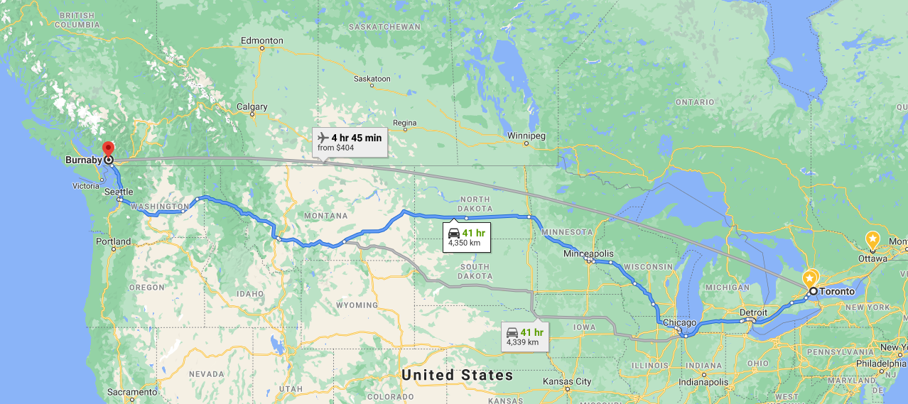

Back to University
Posted on Sat 11 January 2020 in general
There are some silver linings to a global pandemic.
All university courses are now remote. This allows me to do something I've wanted to do for a while... which is... take more computer science courses 😃.
Now, I know that most people who have already graduated don't use their free time to sign up for more university courses. But hear me out. I really liked university. Learning is fun and I always regretted not being able to take more computer science courses when I was in school studying actuarial science.
Fast forward a few years, and I am now a software engineer (not an actuary anymore) and although you can learn basically everything these days online, there are a few benefits to taking some university courses.
- When you are paying for a course, you are more likely to put in some serious effort
- If I want to do a master's one day, doing well in some upper level computer science courses won't hurt
- Networking opportunities with students and professors
- Student perks (10% off groceries? Student credit cards?)
So, I've signed up for one computer science course this semester. If I wasn't working maybe or could get my employer to reimburse me for more courses, maybe I would've done more.
I'll be taking the course at Simon Fraser University where I did my undergrad. Here is how far I live from the university. Glad I am don't have to make this commute 😂.

Should be a fun challenge. Would be embarassing if I don't do well in this course given that I work with data structures and algorithms everyday plus in my free time. We shall see.
Oh and hopefully, I will be able to take another course (Operating Systems) in the summer.